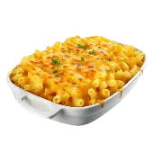
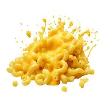

once all the ingredents have been colleted, you can start making you mccheese!
Gather all ingredients. Preheat oven to 350°F. Grease a 9x13-inch baking dish with 1 tablespoon of melted butter.
Stir crackers and 3 tablespoons of the melted butter together in a medium skillet; cook, stirring often, over medium until lightly toasted, about 2 minutes. Remove from heat; set aside.
Whisk flour and remaining 4 tablespoons melted butter together in a large Dutch oven over medium heat; cook, whisking constantly, until still blond in color but bubbly and somewhat toasty in aroma, about 2 minutes.
Gradually add milk and half-and-half, whisking constantly, until combined. Cook over medium heat, whisking often, until milk mixture can very lightly coat the back of a spoon and hold a trail when a finger is dragged through, 2 to 4 minutes.
Remove from heat; whisk in mustard, salt, garlic powder, paprika, and bouillon until dissolved and well combined.
Gradually whisk in Cheddar, smoked Cheddar, and 1 cup of the Colby Jack, one cup at a time, until melted and smooth.
Stir in cooked pasta until evenly coated. Spread half of the pasta mixture into prepared pan; top evenly with 1 cup of the mozzarella and 1/2 cup of the Colby Jack. Dollop and spread sour cream evenly over mozzarella mixture.
Top evenly with remaining pasta mixture; sprinkle with remaining 1 cup mozzarella and 1/2 cup Colby Jack.
Sprinkle crushed cracker mixture evenly over pasta mixture.
Bake in preheated oven until pasta mixture is bubbly around the edges, 25 to 30 minutes, loosely covering with aluminum foil to prevent overbrowning, if needed. Let stand on a wire rack for 5 minutes.
serve immdeieatly for the best taste!
